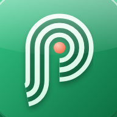

Confidențialitate
Porția, aplicația de calorii și macronutrienți · actualizat pe 11 noiembrie 2026
Pe scurt: jurnalul tău stă pe telefonul tău. Porția nu are conturi, nu trimite jurnalul tău pe un server, nu are reclame și nu te urmărește.
Ce păstrează aplicația
Ce notezi tu: mesele, apa, greutatea, ținta de greutate, țintele de calorii și macronutrienți, fastingul, somnul, motivul pentru care mănânci (foame, stres, plictiseală sau social), antrenamentele și seriile notate la exercițiul de referință (greutatea și repetările), medicația pentru greutate, dacă alegi s-o notezi (medicamentul, ziua injecției, dozele pe care le notezi, apetitul și greața, data la care ai oprit), rețetele, produsele salvate și setările. Datele de profil pe care le dai la început (sex, vârstă, înălțime, greutate, nivel de activitate și obiectiv) servesc doar la calculul țintei.
Acestea sunt date despre sănătate, așa că aplicația îți cere acordul explicit înainte să păstreze ceva.
Unde stau datele
Doar pe dispozitivul tău, în memoria aplicației. Nu le trimitem nicăieri și nu le vedem. Dacă ștergi aplicația, se șterg și datele.
Ca să le muți pe alt telefon, din Profil → Cod de backup generezi un cod pe care îl păstrezi tu și îl restaurezi pe celălalt dispozitiv.
Dacă adaugi widgeturile Porția pe ecranul telefonului sau pe ecranul blocat, aplicația le dă caloriile și macronutrienții zilei. Cifrele rămân pe telefon, într-un spațiu pe care îl văd doar Porția și widgeturile ei. Pe ecranul blocat sunt vizibile și fără deblocare, așa că le adaugi acolo doar dacă vrei.
Dacă ai pornit copia de rezervă a telefonului (iCloud pe iPhone, backup-ul Google pe Android), sistemul poate include și datele Porția în copia din contul tău, ca să le regăsești pe un telefon nou. Copia aceea o gestionezi tu, din setările telefonului.
Ce iese de pe telefon
- Codurile de bare. Când cauți un produs care nu e în lista ta, aplicația trimite numărul codului de bare la Open Food Facts, o bază de date deschisă despre alimente, și la baza comună de produse Porția, și primește valorile nutriționale. Nu trimite nimic altceva despre tine. Pentru Open Food Facts se aplică politica lor de confidențialitate.
- Produsele pe care alegi să le trimiți. Când salvezi un produs de pe etichetă, poți bifa „Trimite-l în baza comună Porția”, ca alții să-l găsească direct. Doar atunci pleacă pe serverul Porția codul de bare, numele produsului, valorile nutriționale, porția și pachetul, plus un număr aleator generat de aplicație pe acest dispozitiv. Nu pleacă nimic din jurnalul tău. Serverul nu păstrează nici numărul acesta, nici adresa ta IP: păstrează doar amprente criptate ireversibil (cu o cheie secretă) ale dispozitivului și ale rețelei, ca un produs să fie confirmat doar de oameni diferiți. Ca să limiteze abuzurile, serverul ține și o amprentă a adresei IP care se schimbă la fiecare oră și dispare după cel mult o oră. Un produs confirmat îl văd toți utilizatorii Porția, fără nicio legătură cu tine. Serverul e găzduit de Supabase, în Uniunea Europeană.
- Raportul pentru medic, doar când îl trimiți tu. Dacă notezi medicația, poți crea din Progres un raport text cu dozele, greutatea, apetitul și greața. Raportul se face pe telefon și pleacă doar unde alegi tu să-l trimiți sau să-l salvezi.
- Raportul pentru antrenor, doar când îl trimiți tu. Dacă pornești „Antrenorul meu”, Porția îți pregătește un raport săptămânal cu mesele și, dacă alegi, cu greutatea, antrenamentele, somnul și medicația. Raportul se face pe telefon și pleacă doar prin aplicația în care alegi să-l trimiți sau să-l lipești. Numele antrenorului rămâne doar pe telefon.
- Nimic altceva. Nu folosim statistici de utilizare, rapoarte de erori, reclame sau servicii de urmărire.
Camera și pozele
Aplicația folosește camera sau galeria doar când alegi tu să fotografiezi un cod de bare. Poza e citită pe telefon și nu e salvată sau trimisă nicăieri.
Cum ștergi totul
Din Profil → Datele tale → Șterge contul și toate datele. Ștergerea e imediată și definitivă. Același efect îl are dezinstalarea aplicației.
Produsele trimise în baza comună le retragi din Profil → Datele tale → Retrage produsele trimise. Ștergerea contului le retrage și pe ele. Dacă dezinstalezi aplicația înainte, numărul aleator al dispozitivului se pierde și nu mai putem afla ce produse ai trimis tu: valorile rămân în baza comună, fără nicio legătură cu tine.
Copii
Porția e pentru persoane de cel puțin 16 ani. Nu e un dispozitiv medical și nu înlocuiește sfatul unui medic sau nutriționist.
Versiunea web și versiunea din Claude
Pe site, datele stau în browserul tău, pe dispozitivul respectiv. Site-ul e găzduit de GitHub Pages, care poate păstra jurnale tehnice ale accesărilor, după politica GitHub.
În aplicația Claude, datele se salvează în contul tău Claude. Dacă pornești estimările cu AI, textul sau poza mesei sunt trimise la Claude (Anthropic) doar ca să fie estimate, fără numele sau e-mailul tău.
Schimbări și întrebări
Dacă se schimbă ceva în felul în care aplicația folosește datele, actualizăm pagina aceasta și data de sus înainte ca schimbarea să ajungă în aplicație.
Pentru întrebări sau cereri despre datele tale, scrie-ne pe pagina proiectului.
In English
Porția keeps your food journal, water, weight, targets, sleep, reasons for eating and settings only on your device. There are no accounts, no ads, no analytics and no tracking, and your journal never leaves the device. When you look up a product, its barcode number is sent to Open Food Facts and to Porția's shared product database. If you choose to share a product you saved from its label, its barcode, name, label values, serving and pack size go to that database with a random number made on your device; the server keeps only one-way keyed hashes of the device and of your network (so one person cannot confirm a product alone), plus an hourly-changing hash of your IP address kept for at most an hour to limit abuse. The server is hosted by Supabase in the European Union. You can withdraw shared products from Profile → Your data. The camera is used only when you choose to photograph a barcode, and the photo is read on the device. If you add Porția's widgets to the home screen or lock screen, the app gives them the day's calories and macros; they stay on the device, and lock screen widgets are visible without unlocking. You can delete everything from Profile → Your data, or by uninstalling the app. Porția is for people aged 16 and over.